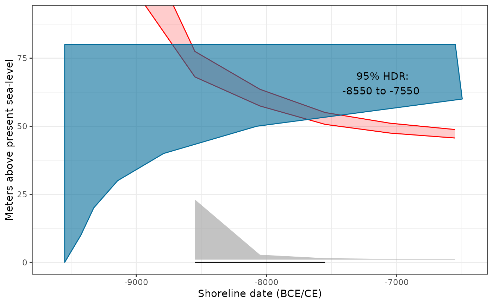

Function for plotting shoreline dates along with associated metadata.
shoredate_plot(
shorelinedates,
date_probability = TRUE,
date_probability_scale = 10000,
elevation_distribution = TRUE,
displacement_curve = TRUE,
site_name = FALSE,
parameters = FALSE,
isobase_direction = FALSE,
highest_density_region = TRUE,
hdr_label = TRUE,
multiplot = FALSE,
date_col = NA,
date_fill = "darkgrey",
displacement_col = "red",
displacement_fill = "red",
site_elevation_col = "#046c9a",
site_elevation_fill = "#046c9a",
hdr_col = "black",
hdr_label_xadj = 0.2,
hdr_label_yadj = 0.3,
greyscale = FALSE
)Object of class shoreline_date.
Logical value indicating whether the
probability distribution of the shoreline date should be plotted.
Defaults to TRUE.
Numerical constant with which to scale the probability distribution of the date to make it fit the plot. Defaults to 10000.
Logical value indicating whether the
distribution describing the distance between site and shoreline should be
displayed. Default is TRUE.
Logical value indicating whether the displacement
curve should be displayed. Default is TRUE.
Logical value indicating whether the name of the site should
be printed in the header of the plot. Defaults to FALSE.
Logical value indicating whether the parameters of the
statistical function should be displayed. Default is FALSE.
Logical value indicating whether the direction of
the isobases should be printed. Default is FALSE.
Logical value indicating whether the 95%
highest density region should be displayed. Defaults to TRUE.
Logical value indicating whether the numeric values for the
highest density regions should be displayed. Default is TRUE.
Logical value indicating whether multiple dates should be
plotted individually, or be collapsed into a single plot. The only other
graphical option with multiplot set to TRUE is highest_density_region.
Default is FALSE.
Character value specifying the outline colour of the
probability distribution of the shoreline date. Defaults to NA.
Character value specifying the fill colour of the
probability distribution of the shoreline date. Defaults to "darkgrey".
Character value specifying the outline colour of the
displacement curve. Defaults to "red".
Character value specifying the fill colour of the
displacement curve. Defaults to "red".
Character value specifying the outline colour of
the distribution describing the likely distance between site and shoreline.
Defaults to "#046c9a".
Character value specifying the fill colour of
the distribution describing the likely distance between site and shoreline.
Defaults to "#046c9a".
Character value specifying the colour of the line
segment giving the highest density region of the shoreline date. Defaults to
"black".
Numerical value between 0 and 1 specifying the position
of the HDR label on the x-axis. Increasing the value moves the label further
from the plot border. Defaults to 0.2.
Numerical value between 0 and 1 specifying the position
of the HDR label on the y-axis. Increasing the value moves the label further
from the plot border. Defaults to 0.3.
Logical value indicating whether the plot should be in
greyscale or not. If TRUE, overrides other colour parameters.
Defaults to FALSE.
Plot(s) displaying shoreline dates and associated metadata.
shoredate_plot() returns a plot displaying the provided shoreline
dates. A single plot is created for each date, where a range of settings can
be adjusted to display or hide various parameters and results. Setting the
parameter multiplot to TRUE returns a sparser version for multiple
dates, where the only option is whether or not to display the highest
density region in addition to each date. multiplot does not allow for
multiple isobase directions. Negative values denote years BCE while positive
values denote CE.
# Create example point with correct coordinate reference system
target_point <- sf::st_sfc(sf::st_point(c(538310, 6544255)), crs = 32632)
# Reduce date resolution with cal_reso and elevation_reso for speed
target_date <- shoreline_date(sites = target_point, elevation = 80,
elev_reso = 10,
cal_reso = 500)
shoredate_plot(target_date)
#> Warning: Removed 20 rows containing missing values or values outside the scale range
#> (`geom_ribbon()`).
